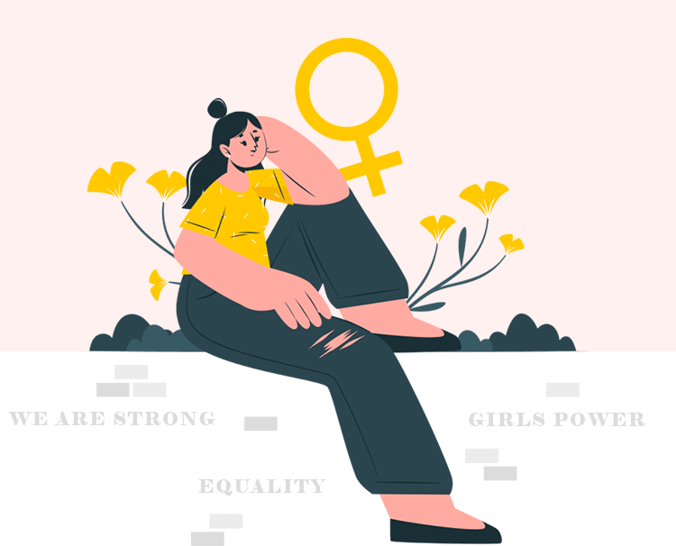

Load page...
feminism
general provisions for society

what is this
Feminism is a phenomenon that can be viewed from at least two sides. Firstly, it is a political movement associated with the struggle of women for equality. It is this aspect that is often associated with classical feminism, in particular with the suffragist movement, who demanded that women be given the right to vote in elections. It seems to us that such problems remained in the distant past, but at the beginning of the 20th century, women did not have voting rights practically anywhere in the world. As a result of the victories of the early feminists, we happily forgot about it.
Secondly, feminism is an intellectual movement, in fact, a trend in philosophy, which in its content and argumentation is much more diverse than classical political feminism.
waves
Over the decades since then, the number of different directions in the feminist movement has grown. Each of them focuses on certain aspects of discrimination against women. The early feminists and early feminist organizations are now referred to as the "first wave" of feminism, and feminists after the 1960s. - "the second wave". There is also the so-called "third wave", but not all feminists agree on the need to distinguish it separately in the light of the ideas it promotes. These three "waves" are named so because their resemblance to the waves of the ocean is emphasized, where each subsequent wave comes after its predecessor and takes its place, without diminishing the significance of the previous one.
The term "feminism" implies a single ideology, but in fact there are many subgroups within this movement. Due to different historical precedents, differences in the position and social status of women in different countries, as well as other factors, feminist ideology had to move in different directions in order to achieve its goals. As a result, there are many varieties of feminism.
Family
Women are now more free to choose the opportunities that open up to them, but some feel significant discomfort from the need to play the role of "superwoman", that is, maintaining the balance between career and caring for the hearth. In response to the fact that it is more difficult for a woman to be a “good mother” in the new society, many supporters of socialist feminism point out the lack of a sufficient number of preschool institutions. At the same time, instead of shifting responsibility for the upbringing and care of children exclusively to mothers, many fathers have become more actively involved in this process, recognizing that this is their responsibility too.
gender gap
The gender gap, or gender gap, is one of the main indicators of economic and social inequality between men and women. It takes into account the difference between men and women in access to income, power, education and health care, and shows how far women lag behind. A large contribution to the gender gap is made by the wage gap, or the wage gap: it indicates how much less money a woman receives on average for a job similar to that of a man, only at the expense of her gender.
During the period from 2010 to 2020, the gender gap in the world decreased: from 41% to 31.4%. Iceland remained the most equal during the entire decade, today women there lag behind men by only 12.3%.